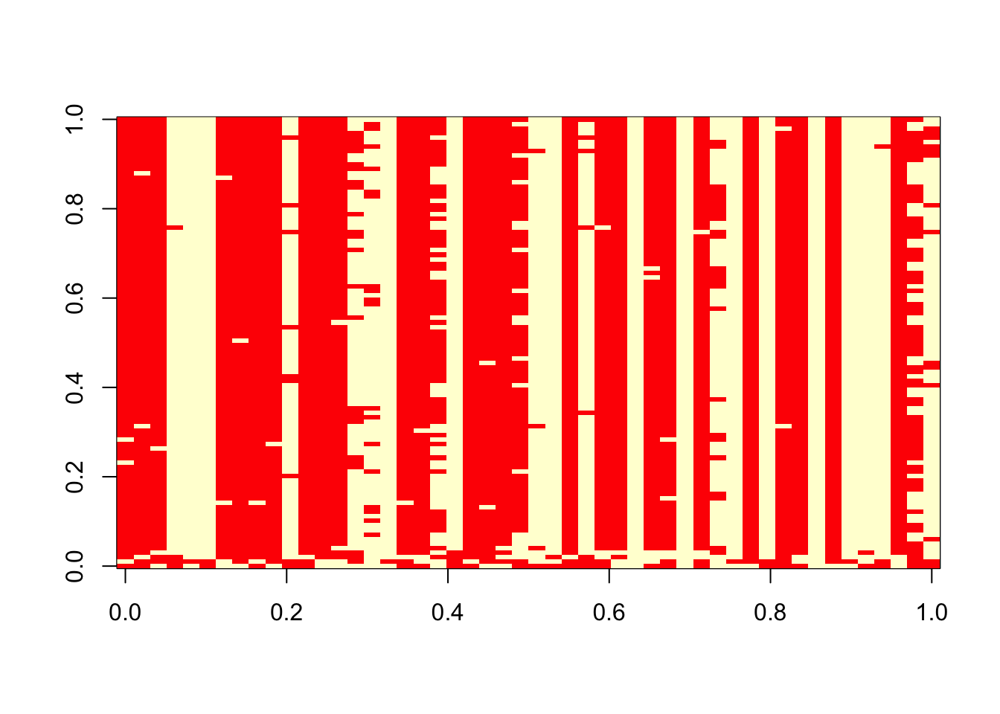

Last updated: 2019-03-31
Checks: 6 0
Knit directory: fiveMinuteStats/analysis/
This reproducible R Markdown analysis was created with workflowr (version 1.2.0). The Report tab describes the reproducibility checks that were applied when the results were created. The Past versions tab lists the development history.
Great! Since the R Markdown file has been committed to the Git repository, you know the exact version of the code that produced these results.
Great job! The global environment was empty. Objects defined in the global environment can affect the analysis in your R Markdown file in unknown ways. For reproduciblity it’s best to always run the code in an empty environment.
The command set.seed(12345) was run prior to running the code in the R Markdown file. Setting a seed ensures that any results that rely on randomness, e.g. subsampling or permutations, are reproducible.
Great job! Recording the operating system, R version, and package versions is critical for reproducibility.
Nice! There were no cached chunks for this analysis, so you can be confident that you successfully produced the results during this run.
Great! You are using Git for version control. Tracking code development and connecting the code version to the results is critical for reproducibility. The version displayed above was the version of the Git repository at the time these results were generated.
Note that you need to be careful to ensure that all relevant files for the analysis have been committed to Git prior to generating the results (you can use wflow_publish or wflow_git_commit). workflowr only checks the R Markdown file, but you know if there are other scripts or data files that it depends on. Below is the status of the Git repository when the results were generated:
Ignored files:
Ignored: .Rhistory
Ignored: .Rproj.user/
Ignored: analysis/.Rhistory
Ignored: analysis/bernoulli_poisson_process_cache/
Untracked files:
Untracked: _workflowr.yml
Untracked: analysis/CI.Rmd
Untracked: analysis/gibbs_structure.Rmd
Untracked: analysis/libs/
Untracked: analysis/results.Rmd
Untracked: analysis/shiny/tester/
Untracked: docs/MH_intro_files/
Untracked: docs/citations.bib
Untracked: docs/figure/MH_intro.Rmd/
Untracked: docs/hmm_files/
Untracked: docs/libs/
Untracked: docs/shiny/tester/
Note that any generated files, e.g. HTML, png, CSS, etc., are not included in this status report because it is ok for generated content to have uncommitted changes.
These are the previous versions of the R Markdown and HTML files. If you’ve configured a remote Git repository (see ?wflow_git_remote), click on the hyperlinks in the table below to view them.
| File | Version | Author | Date | Message |
|---|---|---|---|---|
| html | fbb6c48 | stephens999 | 2018-05-02 | Build site. |
| Rmd | 8183f19 | stephens999 | 2018-05-02 | workflowr::wflow_publish(“analysis/gibbs_structure_simple.Rmd”) |
Last updated: 2019-03-31
Code version: 0cd28bd
Be familiar with Bayesian inference for the two class problem and conjugate Bayesian analysis for a binomial proportion.
Suppose we observe genetic data on a sample of \(n\) elephants at \(R\) locations in the genome (“loci”). For simplicity we will assume the elephants are haploid: that is they have just one copy of their genome. And we will assume that there are just two genetic types (“alleles”) at each locus, which we will label 0 and 1.
We will further assume that there are two type of elephant: forest elephants and savanna elephants, and that the allele frequencies in forest elephants are different from those in savanna elephants, but that the allele frequencies for each of these two groups are unknown. Also, we do not know which samples are forest elephants and which are savanna elehants. Our goal is to infer both these sets of quantities: which individuals are forest vs savanna, and what are the allele frequencies in each group.
Let \(x_i\) denote the genetic data for individual \(i\) (\(i = 1,\dots, n\)). Thus \(x_i\) is a binary vector (a vector of 0s and 1s) of length \(R\). Let \(X\) denote the combined genetic data, \(X=(x_1,\dots,x_n)\).
Let \(z_i \in \{0,1\}\) denote the group (forest vs savanna) of individual \(i\), and let \(Z\) denote the vector \(Z=(z_1,\dots,z_n)\).
Let \(P_{kj}\) denote the frequency of the “1” allele at locus \(j\) in group \(k\) (\(j =1,\dots,R\); \(k=0,1\)). (Here group 0 means forest and group 1 means savanna.) Let \(P_k\) denote the vector \((P_{k1}, \dots, P_{kR})\), and \(P\) denote all the unknown allele frequencies \(P=(P_0,P_1)\).
With this notation in place, we can state the problem: infer the unknowns \(Z\) and \(P\) from the observations \(X\).
To perform Bayesian inference for \(Z\) and \(P\) we need to specify the likelihood \(p(X | Z, P)\) and a prior distribution \(p(Z,P)\).
For the likelihood, for each individual we will assume that if we knew its group of origin, and we knew the allele frequencies in each group, then the genetic data at different markers are independent draws from the relevant allele frequencies. This is exactly the model assumed here. In mathematical notation, we assume: \[p(x_i | z_i , P) = \prod_{j=1}^R P_{{z_i} j}^{x_{ij}}(1-P_{{z_i}j})^{(1-x_{ij})}.\] All the subscripts here make this a bit difficult to read. To make things easier to read we can replace \(z_i\) with \(k\), like this: \[p(x_i | z_i=k , P) = \prod_{j=1}^R P_{k j}^{x_{ij}}(1-P_{kj})^{(1-x_{ij})}.\]
We will further assume that the different individuals are independent: \[p(X | Z, P) = \prod_i p(x_i | z_i, P).\] This completes specification of the likelihood.
We will assume that \(P\) and \(Z\) are a priori independent, so \(p(P,Z) = p(P)p(Z)\). This assumption seems reasonable: before seeing the genetic data \(X\), telling you the allele frequencies in the two groups would not tell you anything about the group membership of each individual. (Of course, after seeing the genetic data \(X\), the allele frequencies would help classify the individuals, so \(P\) and \(Z\) are not going to be a posteriori independent. However, here we are concerned with the prior, not the posterior.)
For the prior on \(P\) we will further assume that the allele frequencies in each group at each locus are independent, so \(p(P) = \prod_k \prod_j p(P_{kj})\). This assumption could be improved, but at the cost of considerable extra complexity, and so we stick with independence for now. Also for simplicity we will assume a uniform prior distribution for \(P_{kj}\), so \(p(P_{kj})=1\).
For \(Z\) we will assume that the origin of each individual is independent, with an equal probability (0.5) of arising from each of the two groups. So \[p(Z) = \prod_{i=1}^n p(z_i),\] and \(p(z_i=k) = 0.5\). Again, this assumption could be improved, but we start here for simplicity.
Our goal is to compute (or sample from) the posterior distribution \(p(Z,P | X)\), which by Bayes Theorem is given by \[p(Z, P | X) \propto p(X | Z,P) p(Z,P).\]
\[\Pr(X_{ij} = a | Z_i = k) = p^a_{kj} (1-p)^(1-a)_{kj}\] where \(a \in \{0,1\}\).
One way to sample from this distribution is to implement a Gibbs sampler. This requires us to be able to do two things:
These are called the “full conditional distributions” for Z and P respectively. The use of the word “full” here indicates that they are conditional on everything else (ie the data and all the other parameters).
We know that: \[p(Z| P,X) \propto p(Z,P,X) = \prod_i p(x_i | z_i, P) p(z_i) p(P)\]
So we see that the full conditional for \(Z=(z_1,\dots,z_n)\) factorizes over \(i\) into terms that depend only on \(z_i\) and not the other \(z\)s. That is, \[p(Z| P,X) \propto \prod_i f_i(z_i; x_i,P)\]
for some functions \(f_i\).
This implies that the \(z_i\) are conditionally independent given \(X,P\), which is extremely convenient as it means we can compute their conditional distribution by just computing the marginals.
\[p(Z_i = k | P,X) \propto p(x_i | z_i=k, P)\]
To illustrate, let’s simulate data from this model:
set.seed(33)
# generate from mixture of normals
#' @param n number of samples
#' @param P a 2 by R matrix of allele frequencies
r_simplemix = function(n,P){
R = ncol(P)
z = sample(1:2,prob=c(0.5,0.5),size=n,replace=TRUE) #simulate z as 1 or 2
x = matrix(nrow = n, ncol=R)
for(i in 1:n){
x[i,] = rbinom(R,rep(1,R),P[z[i],])
}
return(list(x=x,z=z))
}
P = rbind(c(0.5,0.5,0.5,0.5,0.5,0.5),c(0.001,0.999,0.001,0.999,0.001,0.999))
sim = r_simplemix(n=50,P)
x = sim$x#' @param x an R vector of data
#' @param P a K by R matrix of allele frequencies
#' @return the log-likelihood for each of the K populations
log_pr_x_given_P = function(x,P){
tP = t(P) #transpose P so tP is R by K
return(colSums(x*log(tP)+(1-x)*log(1-tP)))
}
normalize = function(x){return(x/sum(x))} #used in sample_z below
#' @param x an n by R matrix of data
#' @param P a K by R matrix of allele frequencies
#' @return an n vector of group memberships
sample_z = function(x,P){
K = nrow(P)
loglik_matrix = apply(x, 1, log_pr_x_given_P, P=P)
lik_matrix = exp(loglik_matrix)
p.z.given.x = apply(lik_matrix,2,normalize) # normalize columns
z = rep(0, nrow(x))
for(i in 1:length(z)){
z[i] = sample(1:K, size=1,prob=p.z.given.x[,i],replace=TRUE)
}
return(z)
}
#' @param x an n by R matrix of data
#' @param z an n vector of cluster allocations
#' @return a 2 by R matrix of allele frequencies
sample_P = function(x, z){
R = ncol(x)
P = matrix(ncol=R,nrow=2)
for(i in 1:2){
sample_size = sum(z==i)
if(sample_size==0){
number_of_ones=rep(0,R)
} else {
number_of_ones = colSums(x[z==i,])
}
P[i,] = rbeta(R,1+number_of_ones,1+sample_size-number_of_ones)
}
return(P)
}
gibbs = function(x,niter = 100){
z = sample(1:2,nrow(x),replace=TRUE)
res = list(z = matrix(nrow=niter, ncol=nrow(x)))
res$z[1,]=z
for(i in 2:niter){
P = sample_P(x,z)
z = sample_z(x,P)
res$z[i,] = z
}
return(res)
}Try the Gibbs sampler on the data simulated above.
res = gibbs(x,100)
table(res$z[1,],sim$z)
1 2
1 13 14
2 11 12 table(res$z[100,],sim$z)
1 2
1 4 26
2 20 0 image(t(res$z))
| Version | Author | Date |
|---|---|---|
| 0cd34f6 | stephens999 | 2017-02-21 |
sessionInfo()R version 3.5.2 (2018-12-20)
Platform: x86_64-apple-darwin15.6.0 (64-bit)
Running under: macOS Mojave 10.14.1
Matrix products: default
BLAS: /Library/Frameworks/R.framework/Versions/3.5/Resources/lib/libRblas.0.dylib
LAPACK: /Library/Frameworks/R.framework/Versions/3.5/Resources/lib/libRlapack.dylib
locale:
[1] en_US.UTF-8/en_US.UTF-8/en_US.UTF-8/C/en_US.UTF-8/en_US.UTF-8
attached base packages:
[1] stats graphics grDevices utils datasets methods base
loaded via a namespace (and not attached):
[1] workflowr_1.2.0 Rcpp_1.0.0 digest_0.6.18 rprojroot_1.3-2
[5] backports_1.1.3 git2r_0.24.0 magrittr_1.5 evaluate_0.12
[9] stringi_1.2.4 fs_1.2.6 whisker_0.3-2 rmarkdown_1.11
[13] tools_3.5.2 stringr_1.3.1 glue_1.3.0 xfun_0.4
[17] yaml_2.2.0 compiler_3.5.2 htmltools_0.3.6 knitr_1.21 This site was created with R Markdown